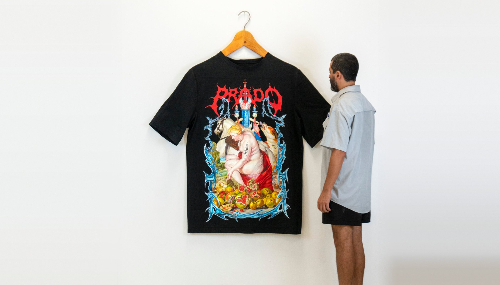
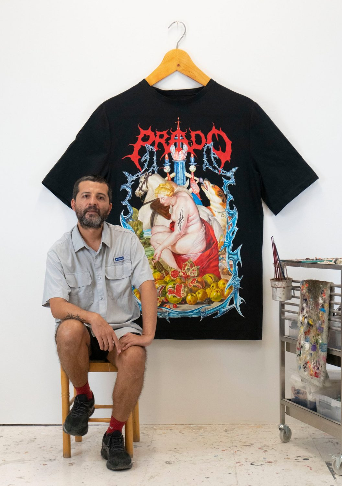

- Nicolás Santiago Romero Escalada
- Buenos Aires, 1985
- Vive y trabaja en Madrid
- Lives and works in Madrid
Nicolás Romero (Buenos Aires, 1985) comenzó hace más de veinticinco años firmando Ever y haciendo graffiti en las calles de su ciudad natal, una ciudad que vivía la resaca de una dictadura militar y que entendía el arte en la calle como un espacio de expresión de libertad.
Hoy su práctica se centra en el trabajo de estudio, usando la imagen como reflexión social e investigación antropológica. Estampas religiosas, símbolos políticos, iconos contemporáneos y elementos cotidianos forman parte de unas composiciones que funcionan como puente para hablar de realidades más complejas.
Ha expuesto en solitario en Ochi Projects y The Diogenes Club (Los Ángeles), Galería Varsi (Roma), Galería Libertad (Querétaro), Dinámica Gallery y Tramo Galería (Buenos Aires) y TING TING Art Space (Taipéi). Ha hecho ilustraciones para New York Times Magazine y ZEIT Magazine.
Nicolás Romero (Buenos Aires, 1985) started out more than 25 years ago signing as Ever and painting graffiti on the streets of his hometown, a city living through the hangover of a military dictatorship, where art on the street was understood as a space for the expression of freedom.
Today his practice centres on studio work, using the image as social reflection and anthropological research. Devotional prints, political symbols, contemporary icons and everyday objects come together in compositions that act as a bridge to more complex realities.
He has had solo exhibitions at Ochi Projects and The Diogenes Club (Los Angeles), Galería Varsi (Rome), Galería Libertad (Querétaro), Dinámica Gallery and Tramo Galería (Buenos Aires) and TING TING Art Space (Taipei). He has made illustrations for New York Times Magazine and ZEIT Magazine.

Statement
Mi práctica parte de una pregunta que no pretende respuesta, pero sí una dirección: ¿cómo lidiar con un presente sobresaturado de información, fragmentado y cada vez más tóxico?
En un contexto donde la catástrofe se anuncia sin cesar pero nunca termina de llegar, recurro a la cultura de masas y los residuos digitales como campo de operaciones simbólicas para tratar de descifrar las contraseñas de nuestro presente.
Trabajo con imágenes y objetos que van del arte clásico a los memes, de los conflictos geopolíticos a juguetes rotos, de los discursos ideológicos a los restos algorítmicos. No me interesa el dato puntual, sino la textura uniforme y pegajosa de un mundo donde lo real se ha vuelto opaco. Desde esa viscosidad intento construir ficciones que no explican sino que se filtran, que no resuelven sino que contaminan.
Produzco desde la resignación, con una mezcla de ironía, melancolía y ansiedad. No busco denunciar ni escapar, sino observar cómo la cultura global, el neoliberalismo y sus fantasmas se descomponen en mí.
Mi obra es el resultado de ese proceso: una superficie que supura. En tiempos de estímulo excesivo y sentido en ruinas, mi propuesta es una clave afectiva, a veces ácida, a veces tierna, para navegar la sobrecarga. No como una solución, sino como un síntoma compartido.
My practice starts from a question that seeks no answer, only a direction: how do we deal with a present oversaturated with information, fragmented and increasingly toxic?
In a context where catastrophe is announced endlessly yet never quite arrives, I turn to mass culture and digital debris as a field of symbolic operations, trying to crack the passwords of our present.
I work with images and objects that range from classical art to memes, from geopolitical conflicts to broken toys, from ideological discourse to algorithmic leftovers. I am not interested in the isolated fact but in the uniform, sticky texture of a world where reality has become opaque. From that viscosity I try to build fictions that do not explain but seep in, that do not resolve but contaminate.
I produce from a place of resignation, with a mix of irony, melancholy and anxiety. I do not seek to denounce or to escape, but to observe how global culture, neoliberalism and its ghosts decompose within me.
My work is the result of that process: a surface that oozes. In times of excessive stimulus and meaning in ruins, my proposal is an emotional key, sometimes acid, sometimes tender, for navigating the overload. Not as a solution, but as a shared symptom.
Descargar dossier 2026 (PDF) Download portfolio 2026 (PDF)
CV
- nicolas.romero@gmail.com
- @eversiempre
Todas las obras de esta web son propiedad del artista.
Queda prohibida su reproducción o uso sin autorización previa.
All works on this website are the property of the artist.
They may not be reproduced or used without prior permission.